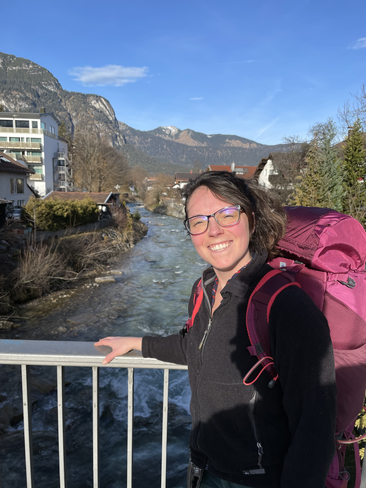
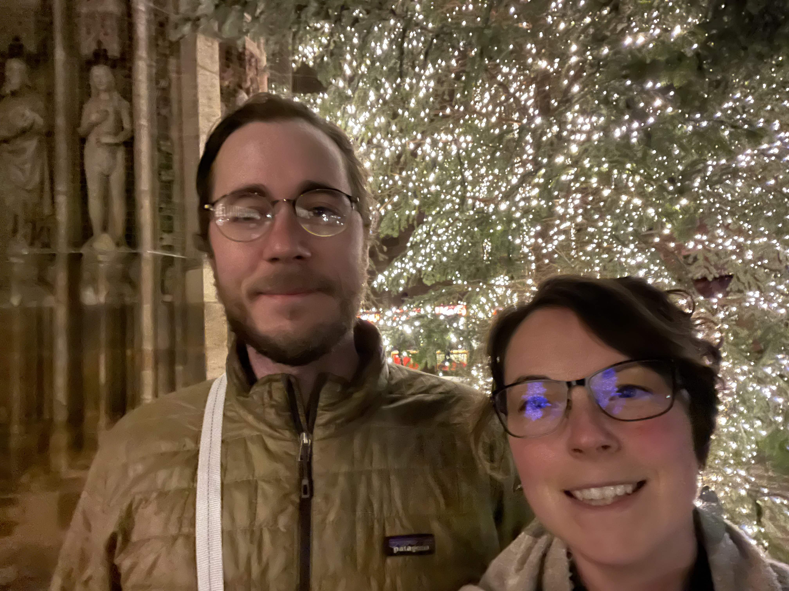
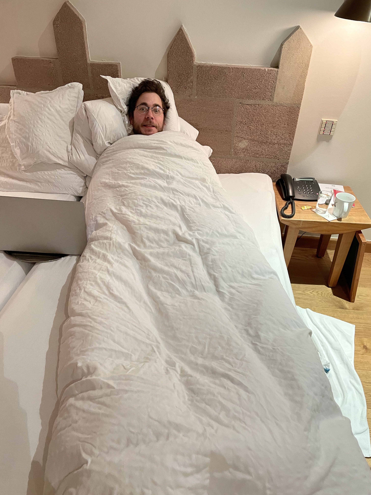
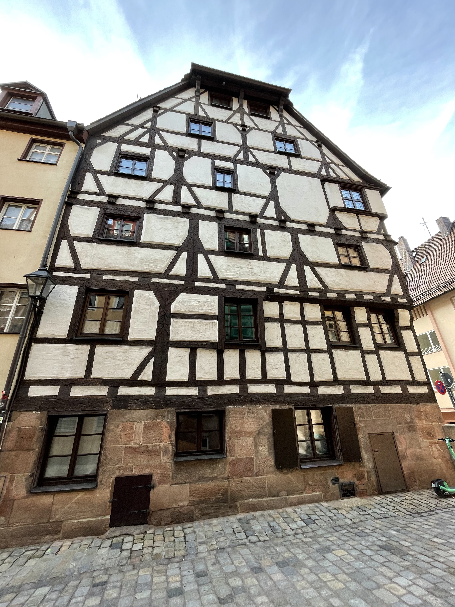
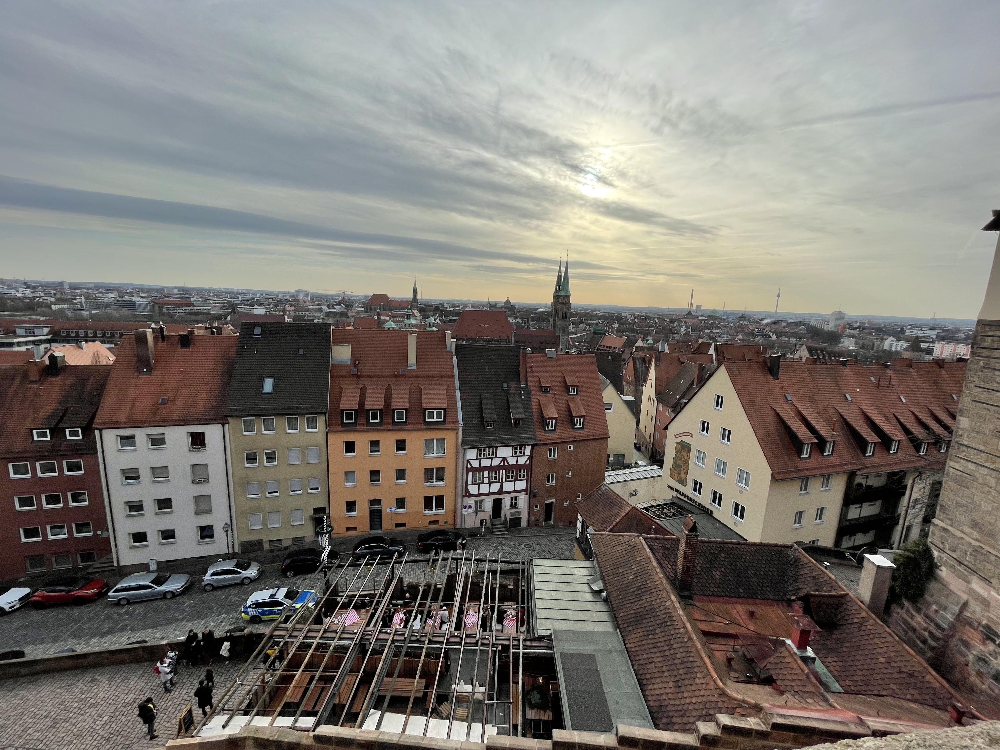
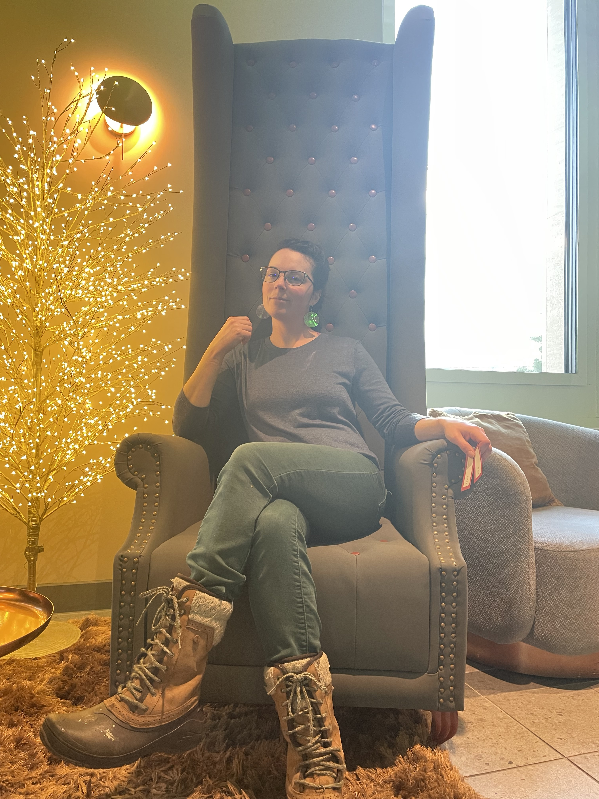
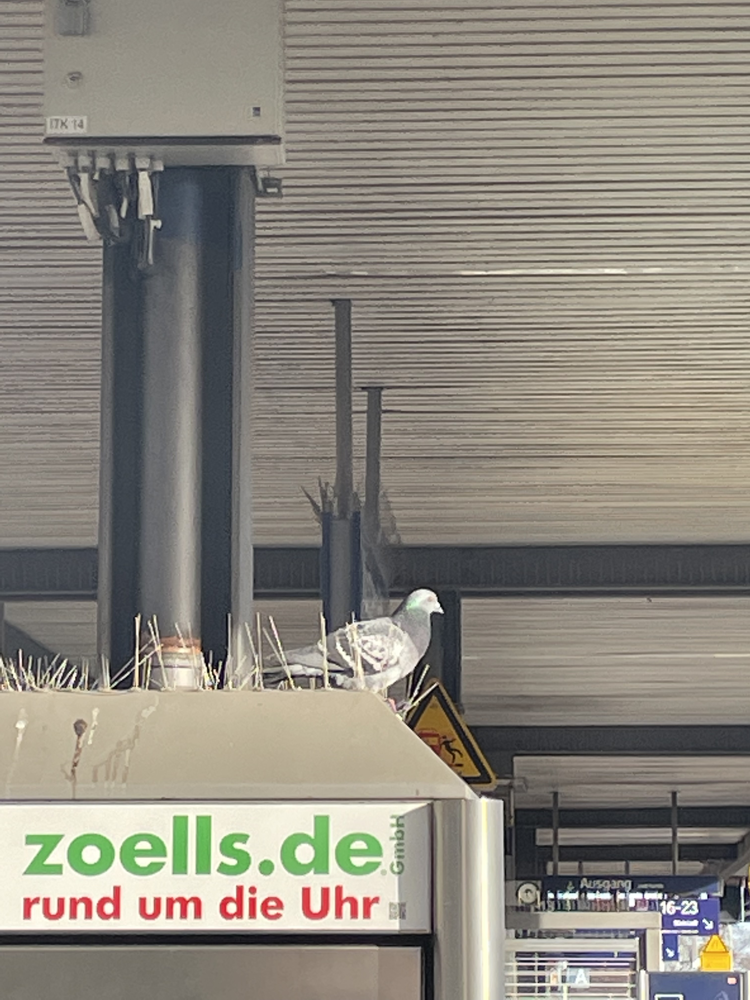
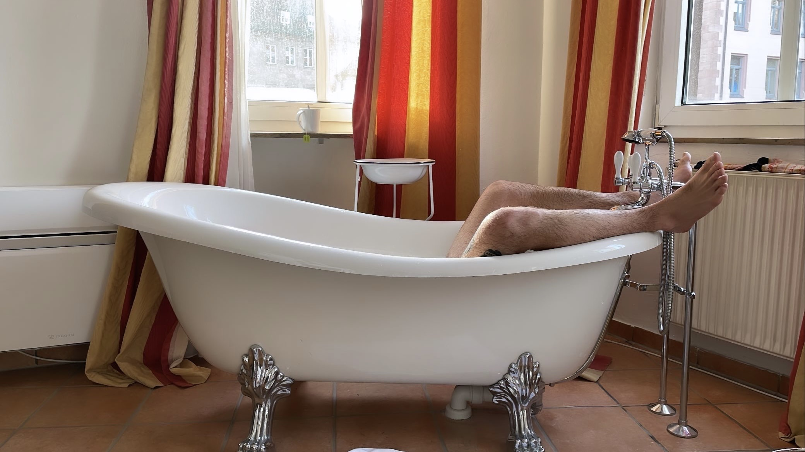
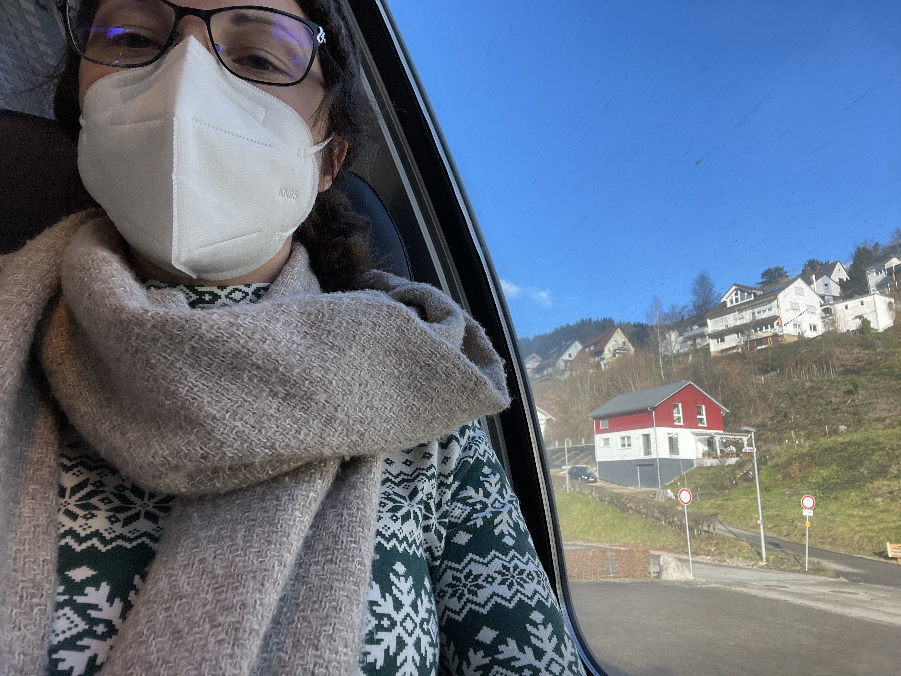
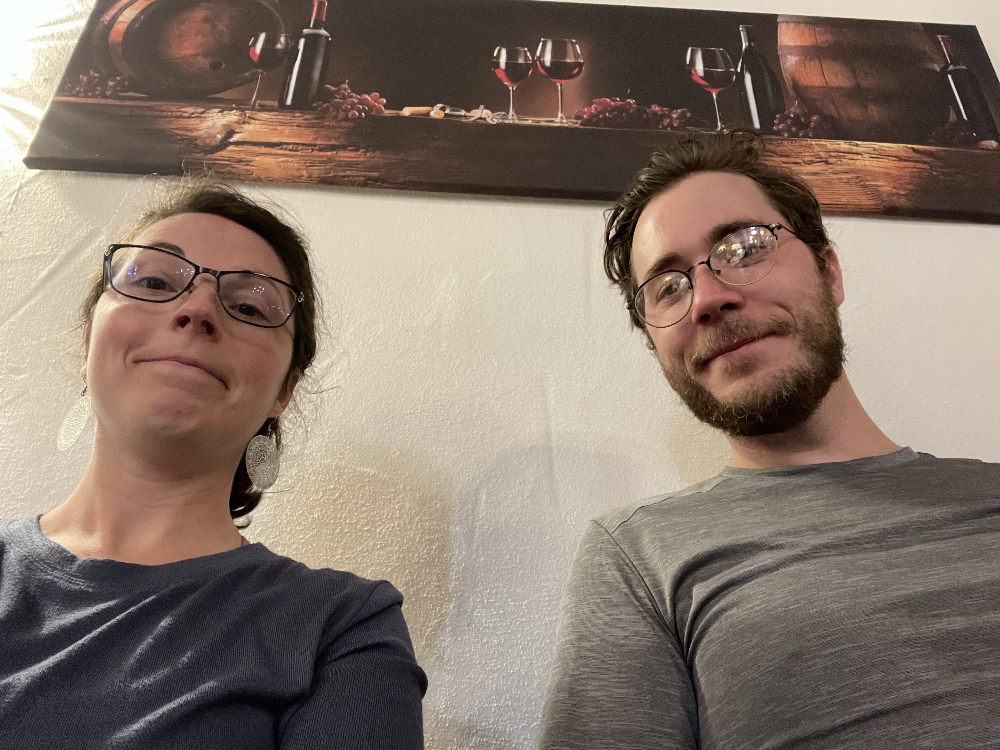

Europe 25/12/2022 - 07/01/2023
31/12/2022
Robert feels kinda alive again. Breakfast at the hotel, then hop the train to Nurenberg.
Rented a suite with a bathtub in the middle of the room.
Walked around the city at night and grabbed too much Turkish takeout before heading back to the room.
Didn't plan on staying up until Midnight, but had no choice because of the party happening in the streets.
Fireworks had been banned throughout COVID and the Germans were making up for lost time!!





01/01/2023
Robert is basically at 100%. Breakfast at the hotel followed by midevil-city wanderings.
Most everything is closed for the holiday.
Most notably, we visited the Imperial Castle and got a great viewpoint of the city below.
We walked for a while between the city wall and the castle walls in a ravine with little garden spaces on either side.
We decide to stay another night. Street-cart bratwurst and gluhwine for dinner.











02/01/2023
More Nurenberg wanderings, including going inside the castle.
Breakfast and coffee at Cafe Katz.
Headed to the Black Forest by train. Decided on Triberg, arriving at night.
We go to the only open restaurant in town, a little pizza place, and meet our favorite person in Germany so far - the waiter.
R: sprechen sie English?
Waiter: Nein, aber sie sprechen Deutch! We gesture and speak our way through ordering too many pizzas and some d.e.l.i.c.i.o.u.s. beers


03/01/2023
Breakfast at Hotel Garni Central. Visit Germany's largest waterfall and hike up to the top through a winding forest pathway.
Left peanuts for the squirrels.
Check out the house of 1,000 cuckoo clocks, didn't buy a clock.
Black forest cake at a cafe. Train ride to Baden-Baden this afternoon.
Spend the evening at the Caracalla thermal baths. Dinner at Lowenbrau - wienerschnitzel and pumpkin soup.